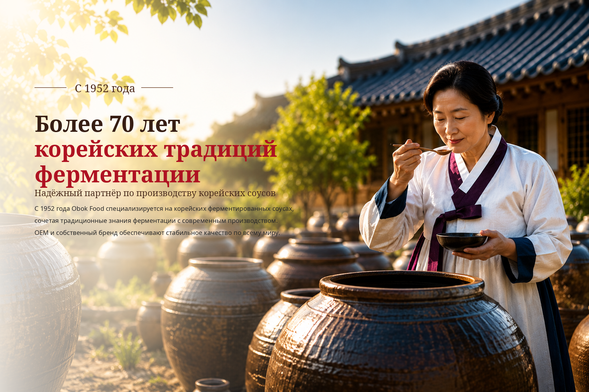

01
Ферментированный соевый соус
Глубокий аромат и сбалансированный вкус для HoReCa, розницы и OEM.
KOREAN BREWED SOY SAUCE
 BUSAN · KOREA
BUSAN · KOREAABOUT OBOK
Более семи десятилетий OBOK сочетает традиционные методы ферментации с современными пищевыми технологиями. Мы производим соевый соус, кочуджан, твенджан и широкий ассортимент соусов для зарубежных партнеров.
PRODUCT CENTER
От традиционных корейских паст и соусов до рецептур для конкретного рынка — OBOK предлагает гибкие решения по разработке и производству.
Глубокий аромат и сбалансированный вкус для HoReCa, розницы и OEM.
KOREAN BREWED SOY SAUCE
Сбалансированное сочетание сладости, остроты и умами для риса, барбекю и соусов.
GOCHUJANG
Насыщенный вкус ферментированной сои для супов, тушеных блюд и приправ.
DOENJANG
Для корейской лапши с черной бобовой пастой и разнообразных блюд HoReCa.
CHUNJANG
Сладко-соленый и умеренно острый соус для мяса, салатных листьев и дипов.
SSAMJANG
MANUFACTURING STRENGTH
Специализированные емкости, стандартизированные процессы и опытная команда обеспечивают стабильное качество и надежные сроки поставки.
FOOD SERVICE & BULK
Поставляем профессиональные и крупные форматы для общественного питания, промышленного использования и зарубежной дистрибуции. Возможна адаптация упаковки и маркировки.

BULK SUPPLY
Поставляем профессиональные и крупные форматы для общественного питания, промышленного использования и зарубежной дистрибуции. Возможна адаптация упаковки и маркировки.
 Кочуджан 14 кг, ведро
Кочуджан 14 кг, ведро Твенджан 14 кг, ведро
Твенджан 14 кг, ведро Традиционный твенджан 14 кгOEM / PRIVATE LABEL
Традиционный твенджан 14 кгOEM / PRIVATE LABELPREMIUM GIFT COLLECTION
Подарочные наборы соевых соусов для праздников, корпоративных подарков и зарубежной розницы. Состав и упаковка могут быть адаптированы.


OEM & PRIVATE LABEL
Мы поддерживаем планирование продукта, разработку образцов, расчет стоимости, производство и экспорт с учетом рынка, вкуса и упаковки.
Продукт, рынок, формат и целевая цена.
Корректировка вкуса и рецептуры.
MOQ, упаковка, сроки и условия.
Выпуск и контроль качества.
Документы, отгрузка и сопровождение.
QUALITY & FACTORY
Системный санитарный контроль и управление ключевыми процессами поддерживают стабильное качество от приемки сырья до отгрузки готовой продукции.
 HACCP CERTIFIED PRODUCTS
HACCP CERTIFIED PRODUCTSНАША ФИЛОСОФИЯ ФЕРМЕНТАЦИИ
Времена меняются, но наша приверженность остается неизменной.
Мы сохраняем принципы корейской традиционной ферментации с терпением, заботой и уважением к природе.
БРЕНД-ФИЛЬМ OBOK FOODS
Познакомьтесь с ценностями, производственными стандартами и мастерством OBOK Foods.
CONTACT US
Направьте нам тип продукта, желаемый формат, объем и целевой рынок.